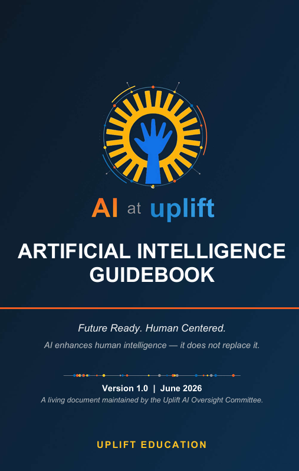
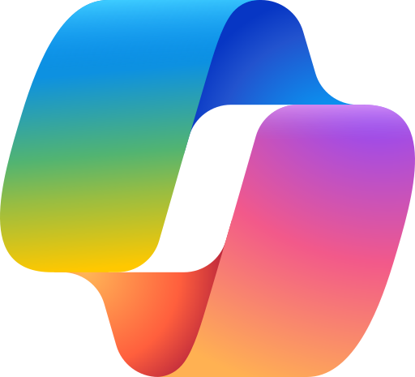

Uplift AI Training
AI Literacy and Ethics: Foundations
By the end of the module, you will be able to:
- Explain what AI is
- Protect scholar data when using AI
- Write prompts that get useful results
Select Play to hear a welcome from our CEO, then select Next to begin. Use the Menu button at the top to see every slide and go back to any slide you've already viewed.
Based on the Uplift AI Guidebook, v1.0 (June 2026). All names in scenarios and examples are fictional.
0 Start here
This module is based on the Uplift AI Guidebook
“AI may assist. AI may not decide.”
Uplift AI Guidebook, v1.0 (June 2026), pg. 2Keep these close by:
- Uplift AI Policy on Uplink: Artificial Intelligence (opens in a new tab)
- Uplift AI Guidebook (June 2026, v1) (opens in a new tab)
Mission control: Head to Resources in the top right and set up your Settings to get flight-ready!

0 Start here
Pre-flight check
This module is about using AI well, safely and in line with Uplift policy.
By the end, you'll be able to do these three things:
- Select each one to check it off.
- Once all three are checked, you'll launch into Section 1.
To finish, view every section and pass the short check at the end of sections 1, 2 and 3.
Stop 1 ·
AI basics
Understanding What AI Is and How It Works:
- Predictive, Generative and Agentic AI
- Why AI can sound right and still be wrong.
Stop 2 ·
Responsible AI
- The four checks to run before you use AI (safe, fair, honest, a human deciding)
- Keeping scholar data private
- Why your account type decides what's protected
- Signing up for Claude for Educators
Stop 3 ·
Prompt writing
- How to create a stronger prompt
- Sample prompts for your role
Stop 4 ·
Space mission: Detect the false signal
Complete three scenarios for your role. Two signals are accurate. One is false. Find the false signal in each.
Stop 5 ·
Before you go
Three key takeaways and a short reflection to bring to your team.
Then you've reached the finish line.
1 Section 1
AI basics
Flight plan
1 AI basics
Mission 1: Which devices use AI?
Select all the devices you think use AI, then run the scan.
Uses AI. It learned what your face looks like from photos, and checks for a match.
No AI. It follows fixed math rules. Same buttons, same answer, every time.
Uses AI. It turns your speech into words and predicts what you're asking for.
No AI. It counts down the time you set. Nothing is learned or predicted.
Uses AI. It predicts traffic from patterns in millions of trips.
1 AI basics
Mission request: Our staff asked. We listened.
When we surveyed staff, teachers and scholars about AI, here's what they told us.
95%
of scholars currently using AI for schoolwork.
Source: Scholar AI Use Survey, September 2026. (Age +13)
90%
of staff and teachers asked for AI training.
Source: October 2026 staff survey.
1 AI basics
Why Uplift: Scholars need AI-literate adults
The AI Guidebook pictures two campuses five years from now.
- On one campus, adults set clear expectations: AI saves teachers time, while scholars still do their own thinking.
- On the other campus, no expectations were set: Some scholars let AI do the thinking, and others never learn to use AI at all.
“The gap between those two campuses is not technology. It is intention.”
Uplift AI Guidebook, Section 01, pg. 3Explore the three reasons
EquityClick to explore
Without intentional adults, AI widens opportunity gaps.
ReadinessClick to explore
College, CTE pathways, careers and CCMR all increasingly expect AI skills.
Role modelsClick to explore
Scholars learn AI habits by watching us.
1 AI basics
Three Levels of AI: Predict, Produce, Perform
Each level builds on the one before. We'll visit them in order.
-
1
Level 1
Predict
Predictive AI
Spots patterns and guesses what comes next.
ExampleGoogle Maps (Algorithm)
-
2
Level 2
Produce
Generative AI
Creates something new from a plain-language prompt.
ExampleCopilot (LLM)
-
3
Level 3
Perform
Agentic AI
Plans and takes steps on its own to reach a goal.
ExampleCopilot Agents (Automation)
1 AI basics
Level 1: Predictive AI
Predictive AI is technology that spots patterns and uses them to make predictions, but it does not understand or think like a human.
How it works
- It learns from huge amounts of writing.
- It guesses the most likely next word, one at a time.
- The same question can get a different answer.
Examples you already use
- Spell check predicts the word you meant.
- Spam filters sort junk from real email.
- Netflix recommends what to watch next.
- Google Maps predicts the fastest route.
The students opened their
1 AI basics
AI predicts words, so it can sound right and be wrong
Each example shows one problem to watch out for. Drag it into the right box, or select it and then select a box.
Example 1 of 4
Drop into one of the zones below
A human must review everything AI produces before it is used.
1 AI basics
Level 2: Generative AI
Predictive AI picks an answer. Generative AI makes a new one. Click to see how it works!

Microsoft Copilot ProtectedYou ask in plain language
Describe what you want in a prompt. No code or menus.
One tool, many jobs
The same chat can draft, summarize, brainstorm, research or rewrite for a new reader.
It creates something new
Here it's text, but it works across formats: images, audio, video, slides, spreadsheets and code.
You refine by adding detail
“Shorter.” “For a 5th grader.” “More formal.” Each reply builds on the last.
1 AI basics
Level 3: Agentic AI
Generative AI makes a draft. Agentic AI does the task on its own to reach a goal. Click to see how it works!
Plan
- Draft the newsletter
- Find “Room 214 Families” in Outlook
- Send the email Needs your OK
Ready to send
To Room 214 Families (26 people)
Subject Exploring Ecosystems Together
Dear families, this month our 7th-grade scientists start a new unit on ecosystems: how plants, animals and their environment depend on each other…
Before you approve, check names, dates, tone and student privacy.
✓ Sent to 26 people
You set a goal
You give it an outcome to reach, not just one prompt to answer.
It plans the steps
It breaks the goal into tasks and picks what to do next.
It uses other tools
It can search the web, open files, send email or book a meeting.
You stay accountable
Check what it did before it acts. AI may assist; AI may not decide.
1 AI basics check
Mission checkpoint: Test your knowledge
Three short questions about this section. Get 2 of 3 right to pass. You'll see feedback after each one, and you can try again if you need to.
Select Next to start.
1 AI basics check
Question 1 of 3
1 AI basics check
Question 2 of 3
1 AI basics check
Question 3 of 3
2 Section 2
Responsible AI
Flight plan
Protect scholar data, choose the right tool, and know why it matters.
2 Responsible AI
Mission Check: Four questions to ask before using AI
Apply these four checks before using AI at work.
Explore the four questions
Is it safe?Click to explore
Does it protect privacy? Match the data to the tool.
Is it fair?Click to explore
AI can repeat bias, so look for missing or misrepresented names, voices and examples.
Is it honest?Click to explore
Acknowledge when AI helped, and keep your own work separate from AI's.
Is a human deciding?Click to explore
You verify it, you own it, and you make the call.
If the answer to any of these is “no,” stop. AI may assist. AI may not decide.
2 Responsible AI
Privacy comes first
“If you would not post it on a public bulletin board, do not enter it into an unapproved AI tool.”
Uplift AI Guidebook, Section 07, pg. 21Scholar data is protected by law, including FERPA, IDEA, Section 504, McKinney-Vento, HIPAA and COPPA.
Explore the three rules
Do not pasteClick to explore
Names, IEPs, health, discipline or other private data into a tool that isn't approved for it.
De-identifyClick to explore
Use placeholders such as Student A, Campus 1 or Grade 6.
Match the toolClick to explore
Use only approved Uplift tools, and only for the data they are approved for.
Pause and reflectWhat if a scholar's IEP ended up in an AI company's training data?Click to explore
Once private information is used to train a public model, it can't be taken back. The family's trust is broken, and Uplift may have violated federal law. That's why the tool you choose matters as much as the prompt you write.
2 Responsible AI
Your account type decides what's protected
A frontier model is one of the most advanced general-purpose AI models, such as Copilot or Claude. The same model can be safe or unsafe for your work depending on which account you use it through.
Microsoft Copilot AccountClick to explore
- Sign in with your Uplift account
- Compliant with FERPA
- Not used for training the platform's model
- Example: Copilot in Outlook
Claude for EducatorsClick to explore
- Sign in with your Uplift email
- Compliant with FERPA
- Not used for training the platform's model
- Workspace: Uplift EDU Pilot
Personal or Free AccountClick to explore
- Personal accounts across all platforms
- Not compliant with FERPA
- Used for training the platform's model
- Example: a personal ChatGPT or Claude account
Find the current approved platforms in the Uplift AI Policy on Uplink (opens in a new tab)
2 Responsible AI
Meet Claude for Educators
Uplift's own Claude workspace is now free for all staff, and it's compliant with FERPA. Open each box to learn more.
Explore Claude for Educators
What it isClick to explore
An AI assistant, set up for Uplift
Claude drafts, summarizes and explains, like Copilot. Uplift's workspace keeps what you type protected.
Who it's forClick to explore
Anyone who works with scholar data
Teachers, counselors, special education, campus and central office staff who use FERPA information.
Use Claude in your web browser at claude.ai (opens in a new tab). The Claude for Desktop app is not available at this time.
2 Responsible AI
For those interested, sign up for Claude for Educators
On your computer, select Sign up (optional). On your phone, scan the code.
- 1
Select Sign up (optional)
- 2
Sign up with your Uplift email
Use your @uplifteducation.org address, never a personal email.
Used Claude with your Uplift email before?
Merge that account into Uplift's workspace, so your past work comes with you. See how to merge your account on Uplink (opens in a new tab)
2 Responsible AI check
Mission checkpoint: Test your knowledge
Answer three short questions. Get 2 of 3 correct to complete the mission! Receive instant feedback and retry if needed.
Select Next to start.
2 Responsible AI check
Question 1 of 3
Find the current approved platforms in the Uplift AI Policy on Uplink (opens in a new tab)
2 Responsible AI check
Question 2 of 3
2 Responsible AI check
Question 3 of 3
3 Section 3
Prompt writing
Flight plan
The highest-leverage AI skill for every role.
3 Prompt writing
Use CRAFT to write stronger prompts
Most weak prompts are missing context, role, action, format or tone.
CContextClick to explore
What situation? What grade, role or constraints?
RRoleClick to explore
Who should AI act as? Coach, teacher, counselor?
AActionClick to explore
Draft, summarize, compare, rewrite, analyze or generate.
FFormatClick to explore
Email, table, checklist, lesson plan, rubric or slides.
TToneClick to explore
Warm, professional, concise, family-friendly or direct.
Not every prompt needs all five. When the output feels generic, add what's missing.
3 Prompt writing
Work Example: From Weak to Strong
Choose your role to see an example from your work. Open the stronger prompt, then select each part of it to see where it shows up.
A family newsletter
“Write a newsletter about my science class.”
Missing: grade level, unit, what to include, length and tone. The result will be generic.
A family event reminder
“Write a reminder about conference night.”
Missing: the date and time, how to sign up, who it's for, length and tone. The result will be generic.
A survey summary for Academic Directors
“Summarize this survey.”
Missing: what the survey is about, who will read it, what to pull out, format and tone. The result will be generic.
“I'm writing to the families of my 7th-grade science class about what we'll learn over the next month in our [unit name] unit. Act as an experienced 7th-grade science teacher. Draft a one-page newsletter. Include: a short welcome, the big idea for each week, one hands-on lab, key vocabulary, upcoming quiz and project dates, and two questions families can ask at home. Format it with short headings and bullet points so it fits on one page. Use a warm, family-friendly tone and plain language.”
“Our campus is hosting family conference night on [date] from [time]. Families sign up for 15-minute slots with their scholar's teachers, and Spanish interpreters will be available. Act as a campus family engagement coordinator. Draft a reminder for families. Include the date and time, how to sign up, what to bring and who to contact with questions. Keep it under 150 words so it works as an email or a text message, with the sign-up steps as a numbered list. Use a warm, welcoming tone and plain language that's easy to translate.”
“I'm sharing results from a staff survey about our new onboarding process with campus Academic Directors. The attached results have no names in them. Act as a central office operations analyst. Summarize the results. Identify the top three strengths, the top three pain points and two recommended next steps. Format it as a one-page brief: a three-sentence summary at the top, then a short table of findings. Use a concise, neutral, professional tone for school leaders.”
Why it works: context + role + action + format + tone.
3 Prompt writing
Sample prompts for your role
Copy a prompt sample, paste it into Microsoft Copilot or Claude for Educators and fill in the [brackets]. Remember to de-identify: use placeholders, not real names.
Lesson plan
Act as a [grade/subject] teacher. Create a [time] lesson on [topic] with objectives, a warm-up, an activity, a check for understanding and accommodations.
Family email
Draft a [tone] email to the families of my [grade] class about [topic]. Include [key facts] and end with [what families should do]. Keep it under [length].
Differentiation
Suggest three ways to support and three ways to extend [skill] for [grade level]. Include one idea families can practice at home.
Data summary
Analyze this class data on [assessment]. Identify 3 trends, 2 questions and 1 next step for reteaching. Use plain language.
Find more sample prompts for teachers on Uplink (opens in a new tab)
Family message
Draft a [tone] message to families about [event or change]. Include [date, time and place] and [what to do]. Keep it under [length] and easy to translate.
Meeting agenda
Create a [duration] agenda for [meeting] with goals, discussion questions, decisions needed and follow-up owners.
Campus procedure
Create a step-by-step checklist for [procedure]. Include who does what, when, materials needed and what to do if something goes wrong.
Data summary
Analyze this campus data on [topic]. Identify 3 trends, 2 questions and 1 recommended next step for the campus team. Use plain language.
Find more sample prompts for campus staff on Uplink (opens in a new tab)
Report summary
Summarize this [report or policy] for [audience]. Give a three-sentence overview, the key points as bullets and what it means for campuses.
Email to campuses
Draft a [tone] email to [campus audience] explaining [change]. Include [dates and deadlines], what they need to do and who to contact. Keep it under [length].
Standard Operating Procedures
Create a standard operating procedure for [process]. Include purpose, owner, steps, timeline, risks and completion criteria.
Data summary
Analyze this data on [topic]. Identify 3 trends, 2 questions and 1 recommended next step. Format it as a one-page brief for [audience].
Find more sample prompts for central office on Uplink (opens in a new tab)
For the data summary sample, only paste scholar data into Microsoft Copilot or Claude for Educators, signed in with your Uplift account, and remove names whenever possible.
3 Prompt writing check
Mission checkpoint: Test your knowledge
Answer two short questions. Get 1 of 2 correct to complete the mission! Receive instant feedback and retry if needed.
Select Next to start.
3 Prompt writing check
Question 1 of 2
3 Prompt writing check
Question 2 of 2
4 Section 4
Practice
Flight plan
Space mission: Detect the false signal. Three scenarios for your role.
4 Space mission: Detect the false signal
Scenario 1 of 3
Choose your role. In each scenario, two signals are accurate and one is false. Can you find it?
Not scored
4 Space mission: Detect the false signal
Scenario 2 of 3
4 Space mission: Detect the false signal
Scenario 3 of 3
5 Section 5
Before you go
Flight plan
Review three key takeaways, complete your mission debrief, and return to Earth!
5 Before you go
Three things to take with you
AI may assist. AI may not decide.Click to explore
Review everything AI produces. You own the result.
Match the data to the tool.Click to explore
Scholar data goes only into Microsoft Copilot or Claude for Educators, signed in with your Uplift account. Avoid using a personal or free account.
Use CRAFT framework for prompting.Click to explore
Add context, role, action, format and tone when the output feels generic.
5 Before you go
Mission debrief
Finish this sentence for yourself: “One thing I want to understand better about AI is…”
Bring your answer to your supervisor or your next team meeting.
Questions about AI tools or privacy? Email ai@uplifteducation.org, or ask your supervisor, IT (about tools), Legal Affairs (about privacy) or Talent Management (about employee matters).
5 Before you go
Mission Complete!
Your browser didn't let this page close the window. Close it with your browser's × button, then check that the module is marked Complete.